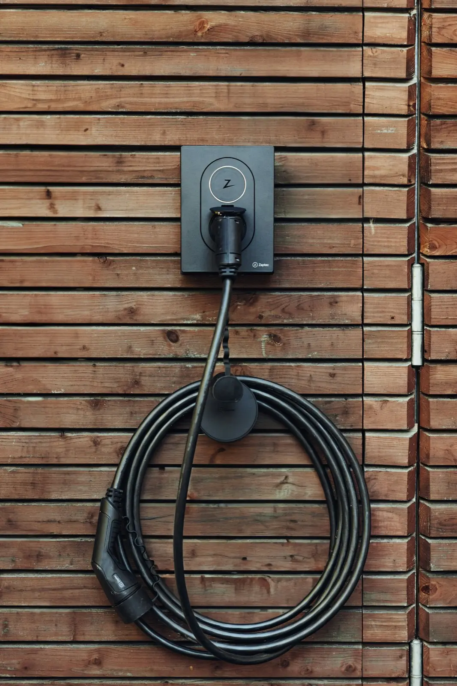

Load balancing
Een meter in de meterkast ziet hoeveel stroom uw huis op dat moment gebruikt. De laadpaal neemt wat er over is. Zo valt de hoofdzekering niet uit als u tegelijk kookt en laadt.
Home / Laadpalen
Wij controleren of uw meterkast er klaar voor is, leggen een eigen groep aan en plaatsen de laadpaal netjes op uw oprit of aan de gevel.


Een laadpaal is meer dan een kastje aan de muur. Hij vraagt urenlang veel vermogen van uw installatie. Daarom beginnen wij in de meterkast.
Een meter in de meterkast ziet hoeveel stroom uw huis op dat moment gebruikt. De laadpaal neemt wat er over is. Zo valt de hoofdzekering niet uit als u tegelijk kookt en laadt.
Veel laadpalen kunnen laden met wat uw panelen op dat moment overhouden. Wij koppelen de laadpaal aan de meting, zodat uw auto vooral op eigen stroom laadt.
Meerdere laadpunten op één aansluiting, met verdeling van het vermogen over de laadpunten en zo nodig verrekening per gebruiker.
Uw aansluiting bepaalt hoe snel u thuis kunt laden. Op uw slimme meter of in de meterkast staat welke u heeft. Weet u het niet? Stuur een foto mee.
| Aansluiting | Laadvermogen | Bereik per uur laden* | Geschikt voor |
|---|---|---|---|
| 1-fase, 16 A | 3,7 kW | circa 20 km | Plug-in hybride, weinig kilometers |
| 1-fase, 32 A | 7,4 kW | circa 40 km | Volledig elektrisch, 's nachts vol |
| 3-fase, 16 A | 11 kW | circa 60 km | De meeste elektrische auto's |
* Bij een verbruik van ongeveer 18 kWh per 100 km. Uw auto bepaalt mee hoe snel hij laadt.
U stuurt een foto van uw meterkast en van de plek waar de laadpaal moet komen. Wij beoordelen wat er nodig is.
U krijgt een offerte met het werk in de meterkast, het kabeltracé en de laadpaal. Zonder verrassingen achteraf.
Wij installeren, testen en stellen de laadpaal in. U krijgt uitleg over laden, de app en load balancing.
Een laadpaal krijgt een eigen groep met een eigen beveiliging. Is daar in uw groepenkast geen ruimte voor, dan breiden wij de kast uit. Wij controleren ook of uw hoofdaansluiting het extra vermogen aankan.
Op een 1-fase aansluiting laadt u met maximaal 3,7 kW (16 ampère) of 7,4 kW (32 ampère). Op een 3-fase aansluiting van 3 x 25 ampère is 11 kW gebruikelijk. Hoe snel het in de praktijk gaat, hangt ook af van wat uw auto aankan.
Load balancing meet hoeveel stroom uw huis op dat moment gebruikt en past het laadvermogen daarop aan. Zo valt de hoofdzekering niet uit als u tegelijk kookt en laadt. Bij vrijwel elke thuislaadpaal raden wij het aan.
Ja. Veel laadpalen kunnen het laden afstemmen op wat uw panelen op dat moment opwekken. Na het einde van de salderingsregeling op 1 januari 2027 wordt dat extra interessant.
Een eigen laadpaal mag alleen op eigen terrein. Parkeert u aan de openbare weg, dan kunt u bij uw gemeente een openbare laadpaal aanvragen. De regels verschillen per gemeente.
Ja. Voor bedrijven en verenigingen van eigenaren leggen wij een of meer laadpunten aan, met load balancing over de laadpunten en zo nodig verrekening per gebruiker.
Vertel kort wat u wilt laten doen. U hoeft niet te weten wat er technisch nodig is: een foto van uw meterkast zegt ons vaak al genoeg.